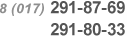

Контакты
По вопросам приобретения автомобилей обращаться по тел.:

Все контакты
О компании
ПТ ЗАО «БелГАЗавтосервис» было создано в 1992 году.
Основными видами деятельности предприятия являются:
- реализация автомобилей и запасных частей производства Горьковского автомобильного завода (ОАО «ГАЗ»);
- техническое обслуживание (предпродажное, гарантийное, послегарантийное) автомобилей марки ГАЗ.
Среди прочих осуществляемых видов деятельности можно выделить:
- изготовление фургонов (промтоварных, изотермических) для грузовых автомобилей;
- тюнинговая доработка автомобилей (доведение автомобилей до класса «Люкс»).
Свою хозяйственную деятельность ПТ ЗАО «БелГАЗавтосервис» осуществляет по адресу: г. Минск, ул. Бабушкина, 25 на собственных производственных площадях.
В 1996 году ПТ ЗАО «БелГАЗавтосервис» получило статус генерального представителя ОАО «ГАЗ» в Республике Беларусь по сбыту, гарантийному и техническому обслуживанию продукции ОАО «ГАЗ».
Поддерживая имидж автомобилей ОАО «ГАЗ» в Республике Беларусь, ПТ ЗАО «БелГАЗавтосервис» практически единолично (свыше 90 %) осуществляет гарантийное обслуживание всех поставляемых в РБ автомобилей (в том числе реализованных другими предприятиями).
За период своей деятельности ПТ ЗАО «БелГАЗавтосервис» реализовало на рынке Республике Беларусь более 10 000 автомобилей семейства ГАЗ: «Волга», «ГАЗель», «Соболь», средние грузовики.
Автомобили ГАЗ белорусской сборки успешно прошли все необходимые испытания и получили сертификат продукции собственного производства в Белорусской торгово- промышленной палате, а также Свидетельство о согласовании конструкции автотранспортного средства в части, относящейся к обеспечению безопасности дорожного движения. За время существования сборочного производства было собрано более 650 «белорусских» автомобилей марки ГАЗ. В настоящее время производство приостановлено по экономическим соображениям.
На всем протяжении своего существования ПТ ЗАО «БелГАЗавтосервис» большое внимание уделяет развитию собственной дилерской сети. В настоящее время это 6 предприятий и 3 бюро по реализации во всех регионах Республики Беларусь. А именно предприятия:
- ПТ ЗАО «БелГАЗавтосервис» г. Минск;
- ЗАО «БерезаГАЗавтосервис» г. Береза, Брестская область;
- ЗАО «ПинскГАЗавтосервис» г. Пинск, Брестская область;
- ТКЦ «Калинковичи» г. Калинковичи, Гомелская область;
- ЧУП «ЛельчицыГАЗавтосервис» г. Лельчицы, Гомельской области;
- ЗАО «ОктябрьГАЗавтосервис» г. Октябрь, Гомельской области.
Основной целью ПТ ЗАО «БелГАЗавтосервис» в краткосрочной перспективе является увеличение объемов продаж автомобилей марки ГАЗ на территории Республики Беларусь.
Стратегическая цель ПТ ЗАО «БелГАЗавтосервис» состоит в увеличении доли рынка автомобилей и запасных частей номеклатуры «ГАЗ» в Республике Беларусь.